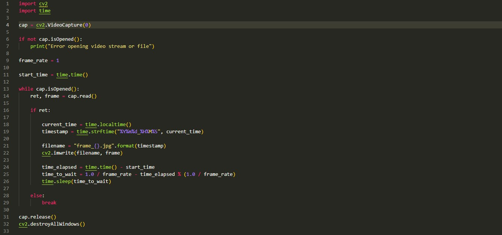

AeroHAB-4
Aerohab Sensing is software designed for recording and processing realtime data from a high altitude weather balloon. It was a project that was done in my SWE321 (Large-scale software systems Design) class at George Mason University. There were 4 teams involved and each was resposible for serparate data required for drone functionality. The teams worked using Agile methology with sprints of 2 weeks. The four data teams included:

I was part of the Camera team and was the Product owner for this team. My team was responsible for developing software scripts to capture live image and video streaming to flight and telemetry teams for the drone maneuvering. used Python to stream images at 1hz. The OpenCV python library was used. The image files were saved with timestamp names; so that they could be processced easily when doing analyssis by the other teams.